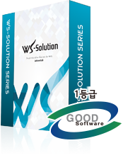
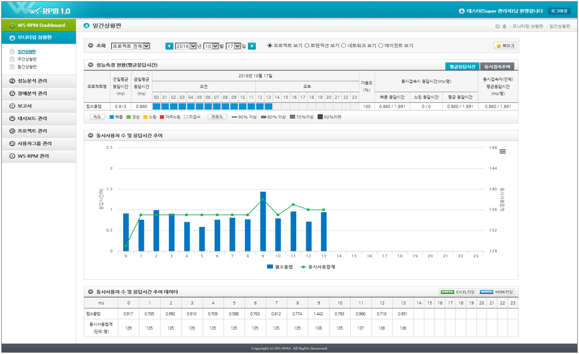
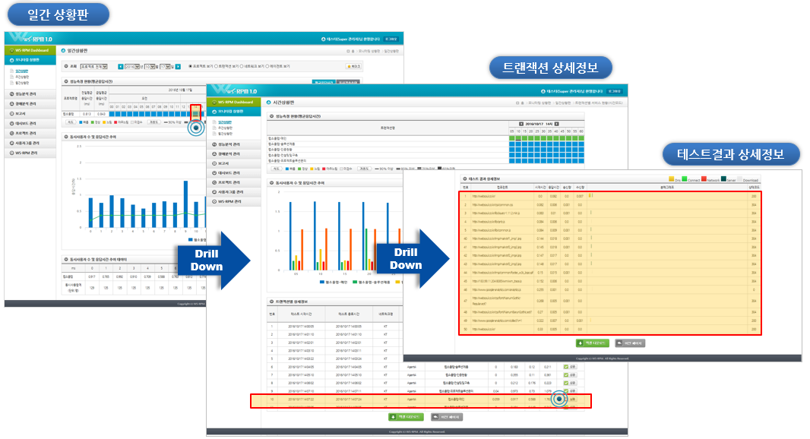

WS-RPM 이란?
WS-RPM (WebSoul : Real-Time Performance Management) 솔루션은 실제 사용자와 동일하게 웹사이트를 주기적으로 이용하는 시뮬레이션을 통하여 웹사이트의 속도(End to End)와 가용성을 실시간으로 측정 및 감시하여 서비스 장애발생과 지연에 대한 모니터링, 성능 분석, 품질 측정을 실시하는 솔루션입니다.
WS-RPM 인증현황
특허·저작권·품질인증
- 특허증 : 웹서비스 성능측정 장치 및 그 방법
- 특허증 : 실시간 웹사이트 성능 측정 방법 및 시스템
- 저작권 증록증 : WS-RPM v2.15
- 소프트웨어품질인증서 : WS-RPM v2.15

WS-RPM 특징
핵심 기능
- 웹 로그 및 사용자 체감 성능 데이터 통합적용으로 실제 사용자 성능 측정
- 특허 등록 기능인 동일 접속자 수에 대한 단위 시간당 로딩 시간(TIME_FCU) 적용
- 실시간 성능 측정 모니터링을 사용별 맞춤 제공 가능한 통합 대시보드 제공
- 사용자 환경 변화에 따른 멀티 디바이스 측정 에이전트 제공 예정 (Native App.)
WS-RPM 솔루션 샘플 화면
대시보드·상황판·프로세스

대시보드

상황판

프로세스
주요 제공 기능
구분별 상세기능
| 구분 | 상세기능 |
|---|---|
| 다양한 응답시간 분석 | 응답시간 분할분석, 서버 응답시간분석, 네트워크 응답시간분석, 클라이언트 응답시간분석, 패킷 응답시간분석 |
| 다각적인 서비스 분석 | 응답시간분포, 응답시간 표준편차, 가용성 분석, SLA관리차트, 서비스품질종합 |
| 철저한 장애관리 | 장애관리 센터(장애 알림 기능), 장애발생시 분석 및 관리 기능, 장애메세지별 기록 저장 |
| 고객 맞춤 보고서 제공 | 월간 보고서, 주간 보고서, 일간 보고서 |